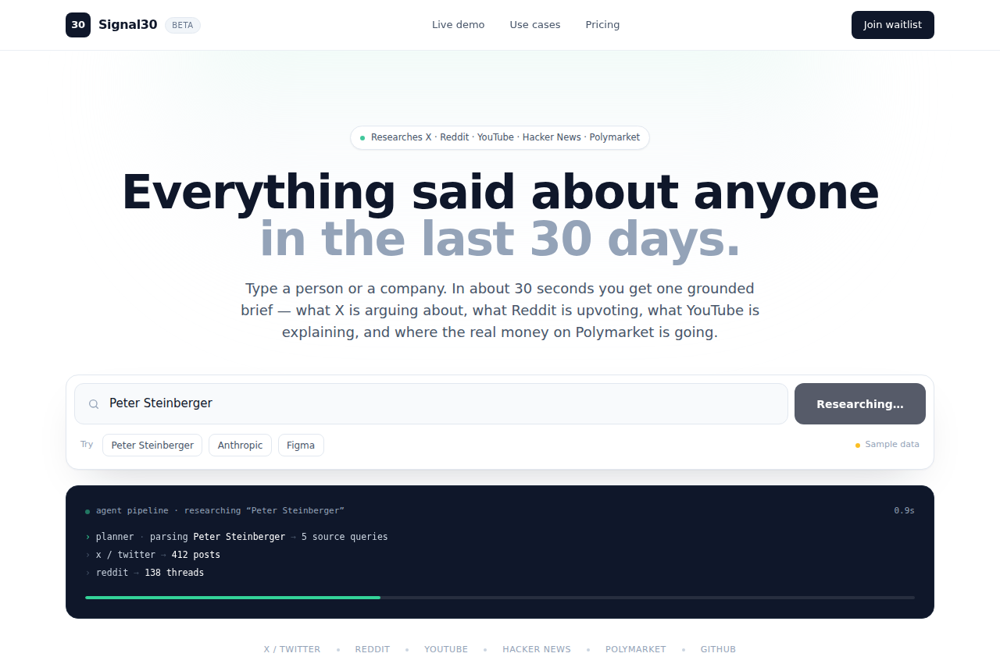

last30days: Cross-platform research skill for AI agents
mvanhorn/last30days-skill · AI appsMIT⭐ 68,598

What it is. mvanhorn/last30days-skill is an Agent Skill for Claude Code, Codex, Cursor and other Agent Skills hosts. You type /last30days <topic or person> and it searches Reddit, X, YouTube, TikTok, Hacker News, Polymarket and the web in parallel, scores results by real engagement (upvotes, likes, market odds), and has an agent judge write one synthesized brief. Per the README, Reddit, HN, Polymarket and GitHub work with zero config; X, YouTube and others unlock through a setup wizard where you bring your own API keys or browser sessions.
Why it's taking off. It hits a real workflow: before a sales call, a meeting or a build decision, you want the last 30 days of what people actually said, not a 2023 LinkedIn page. No single AI has access to all these platforms, and the README's pitch is that one agent plus your own keys can bridge them. 68k stars and ~772/day suggest the demo lands instantly for the AI-curious developer crowd.
Where the product opportunity is. The skill is free and distribution is already solved through plugin marketplaces, so a paid wrapper has to sell something the repo doesn't: hosted data access, no key setup, saved briefs, PDF/email export, team sharing and scheduled monitoring. A web app that turns a name or company into a recurring 30-day intel brief is the obvious shape. The catch is that the value sits on third-party platform access, so data cost, rate limits and ToS risk become your problem, not the repo's.
Today's top 5
| # | Repo | Buzz | Startup | Overall |
|---|---|---|---|---|
| 1 | mvanhorn/last30days-skill | 8.0 | 7.7 | 6.97 |
| 2 | google-research/paper-orchestra | 8.0 | 7.15 | 6.83 |
| 3 | affaan-m/ECC | 7.0 | 6.15 | 6.43 |
| 4 | vercel-labs/agent-browser | 6.67 | 5.65 | 6.34 |
| 5 | elementalsouls/Claude-BugHunter | 7.0 | 6.9 | 6.29 |